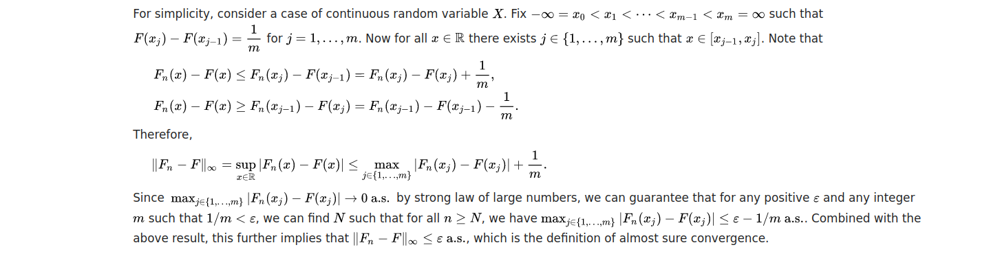
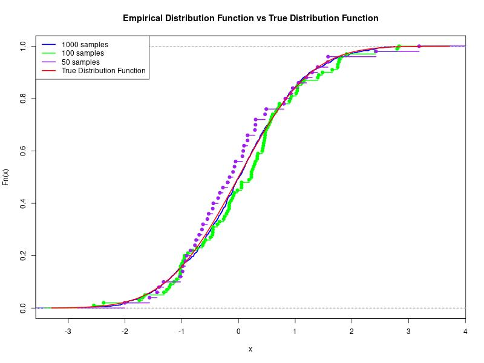

The Glivenko-Cantelli theorem states that for any distribution function \( F \), the cumulative distribution function (CDF) of the empirical distribution function (EDF) converges uniformly to \( F \).
Mathematically, if \( F_n \) is the EDF based on \( n \) independent and identically distributed samples, then \[ \sup_x |F_n(x) - F(x)| \rightarrow 0 \text{ as } n \rightarrow \infty. \]
The Glivenko-Cantelli theorem can be proved using techniques from mathematical statistics. Let's outline the key steps of the proof.

Simulations can be conducted to illustrate the Glivenko-Cantelli theorem in action. I used R to generate random samples and compare the empirical distribution function with the true distribution function.

In the following code I generate three random samples from normal distributions with different sizes, compute empirical distribution functions (EDFs) for each sample, and create a plot comparing the EDFs to the theoretical normal distribution.
# R code for simulation
set.seed(123)
n1 <- 1000
n2 <- 100
n3 <- 50
sample_data1 <- rnorm(n1)
sample_data2 <- rnorm(n2)
sample_data3 <- rnorm(n3)
edf1 <- ecdf(sample_data1)
edf2 <- ecdf(sample_data2)
edf3 <- ecdf(sample_data3)
# Plotting
jpeg("output_image.jpg", width = 800, height = 600) # Specifica il nome del file e le dimensioni desiderate
plot(edf1, main="Empirical Distribution Function vs True Distribution Function", col="blue", lwd=2, ylim=c(0, 1))
lines(edf2, col="green", lwd=2)
lines(edf3, col="purple", lwd=2)
curve(pnorm(x), add=TRUE, col="red", lwd=2)
legend("topleft", legend=c("1000 samples", "100 samples", "50 samples","True Distribution Function"), col=c("blue", "green", "purple", "red"), lwd=2)
dev.off() # Chiudi il dispositivo grafico